Godot Guide
The JellyFaas SDK is capable of working in every environment which has support for .Net Standard 2.0. This means that the Godot game engine and projects developed with it can also take advantage of the features provided by the JellyFaas SDK.
Supported versions
Only the versions of Godot with C# support are capable of making use of the SDK. This means that the 1.x and 2.x versions of Godot and versions with .Net/Mono support disable are not supported, and cannot make use of the JellyFaas SDK.
Here is a walkthrough on using the joesjokes function in Godot 4.2.2:
1. Create a new project or open an existing project
First we have to create or open up the project we want to add the SDK to with a C# enabled version of Godot.
Known problem with C# support in Godot 3.x
The C# support in the 3.x versions of the Godot engine suffer from a known issue which prevents some of the .Net packages from functioning properly. This problem has a known workaround, which is to change the C# target from .Net Standard to .Net Framework. This problem has been fixed in Godot 4.0 and later versions, however if you are using the 3.x versions of Godot it is recommended that you change this setting.
If you open up a project which was created with a version of Godot which has C# support disabled, the Godot engine should automatically generate all the necessary files, however if it doesn't, you may have to create them manually by selecting the Project > Tools > C# > Create C# Solution option. If your project has been created with a version of the engine which does have support for C# the needed files should be generated automatically.
Let us start with the following ui elements:
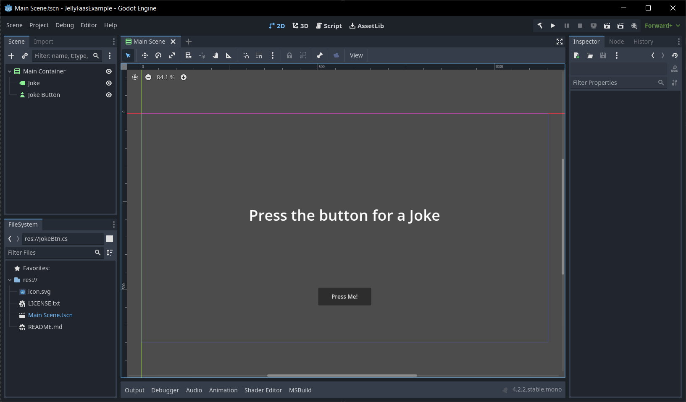
First we have to create a C# script. Right-click on the button node, and press attach script.
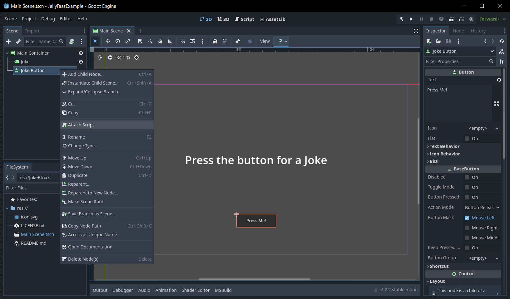
Then we create a new C# script. Make sure the language dropdown menu has C# selected.
Unfortunately you cannot access the SDK through GDScript, however you may be able to make a wrapper node around the SDK functions you need in C#, and call the functions defined on that node in GDScript.
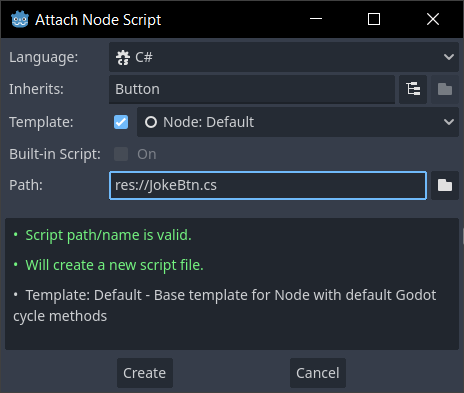
Now lets open up this script in our C# IDE. It is possible to edit C# files in the Godot script editor, however I would recommend using an external IDE for this, as Godot doesn't have a graphical user interface for the NuGet package manager. You can change which editor Godot will use for C# files by going to Editor > Editor Settings, then changing the Dotnet > External Editor option.
To open the file simply double click on the file in Godot's file explorer.
2. Add the JellyFaas SDK to the project
Once the .Net solution has been added you have to add in the JellyfaasSdk NuGet package. Most popular C# IDEs provide you with a graphical user interface to do this, however if you decide to use the built-in Godot script editor, or you use an IDE which doesn't have a package manager, you may have to install the SDK manually through your system's command prompt/terminal.
The following are short guides on how to install the SDK in some popular IDEs.
Installing the JellyFaas SDK is easy with Visual Studio, as it comes with its own built-in NuGet package manager.
To open up the NuGet package manager in Visual Studio select the Project > Manage Nuget Packages option in the toolbar.
In the following window switch to the Browse tab. In the following window you should be able to search for and install the latest version of the JellyFaas SDK.
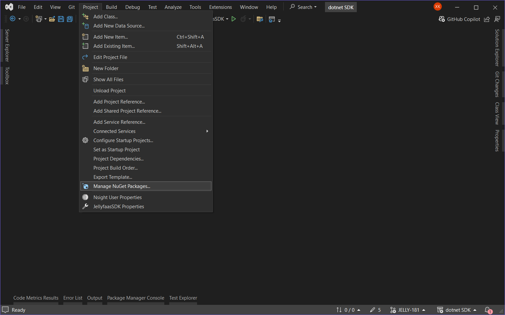
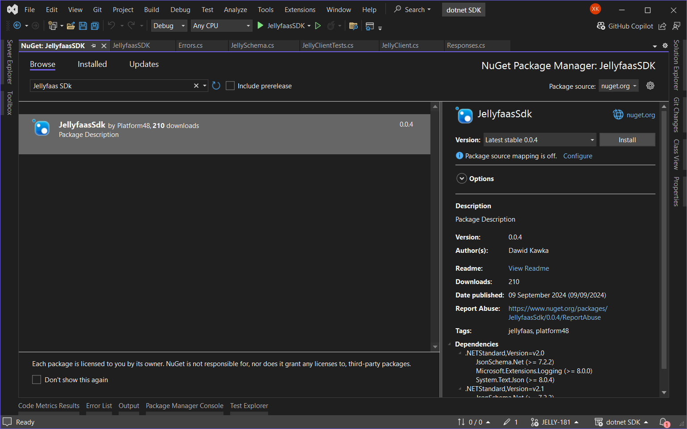
Installing the JellyFaas SDK through Visual Studio Code IDE is easy with the C# Dev Kit extension, which is popular extension for adding C# support to Visual Studio Code.
In Visual Studio Code open up the Command Palette (by default the Ctrl + Shift + P will open it).
In the following search box type in NuGet and select the NuGet: Add NuGet Package option.
The following search box search for and install the JellyFaas SDK package.
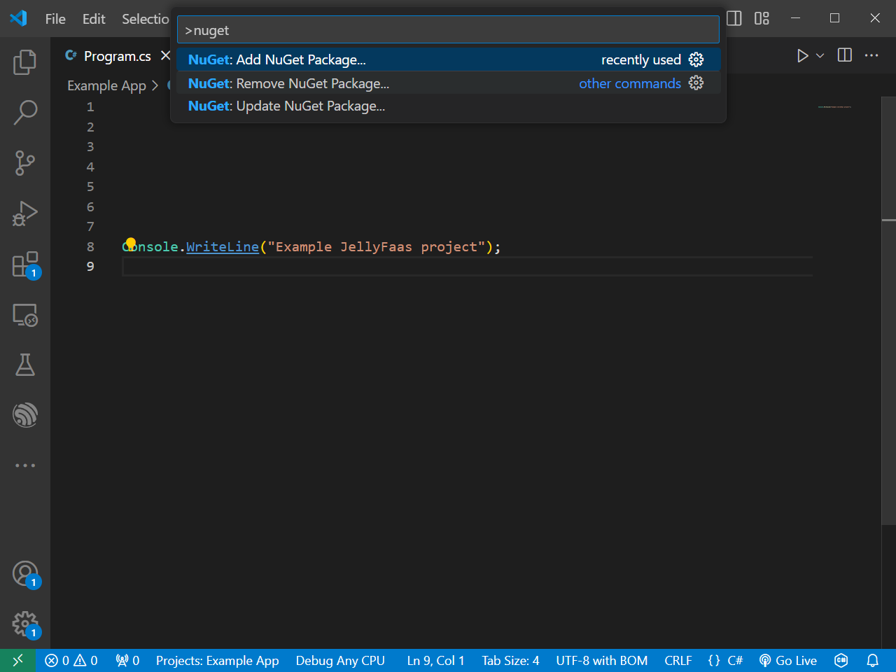
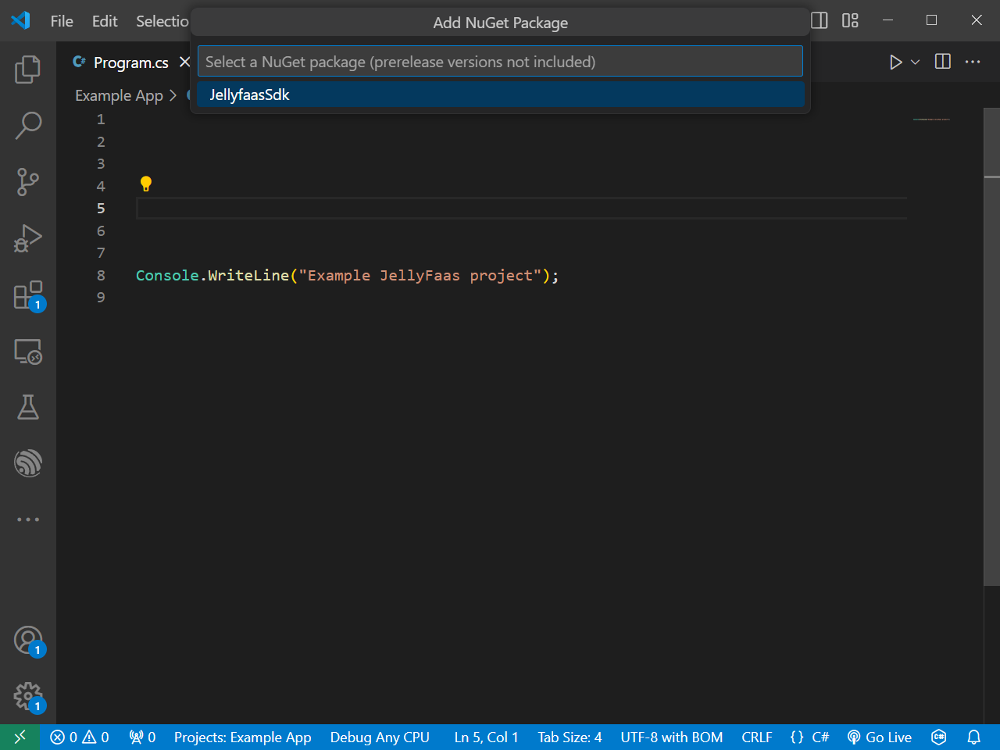
Installing the JellyFaas SDK in Rider is easy, as Rider comes with its own built-in NuGet package manager.
In the JetBrains Rider IDE you can find the NuGet package manager by going to Tools > NuGet > Manage NuGet Packages.
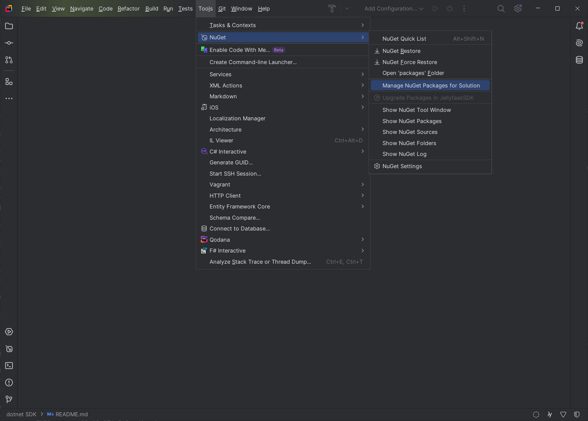
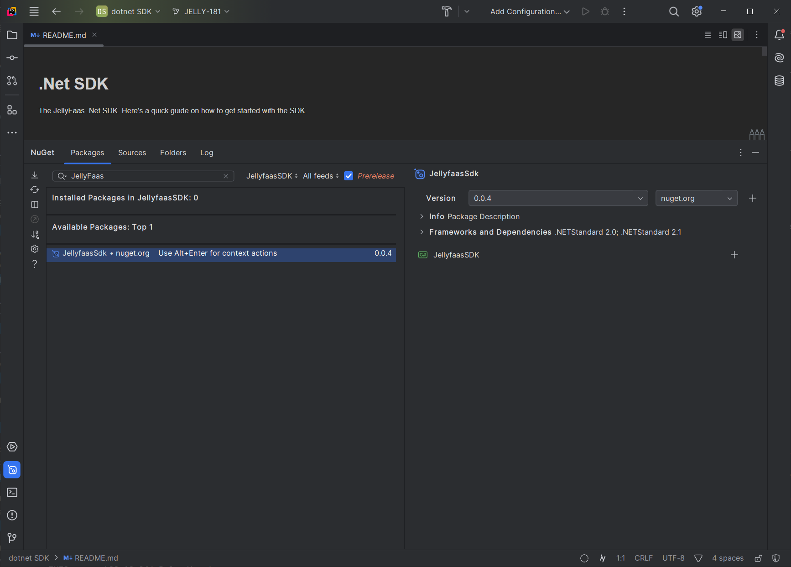
If your IDE does not have a package manager, or the other options provided on this site do not work, you can always fall back to using your command prompt/terminal to install the package. This can be achieved with the dotnet CLI tool which comes bundled in with the .Net SDK.
- Open a console window in the directory your project file (*.csproj) is in.
- Use the
dotnet add package JellyfaasSdkcommand in the console window.
These above steps should automatically install the latest version of the JellyFaas SDK in your Godot project. If you experience any problems make sure you have the dotnet CLI tool installed. You may also want to check out the following links:
3. Using the SDK in your Godot project
After you have successfully installed the JellyFaas SDK in your project you should be able to access the functions and classes provided by the SDK through the Jellyfaas namespace in your C# files. This means that now we can start using it.
First we should import the SDK into this file. We can do this by adding the following line at the top of our script:
Now inside the class responsible for our node we should define some variables. First lets define the variable responsible for storing our JellyClient object which will access our JellyFaas functions.
Lets also define a property which will store a reference to our label node we want to put the joke in.
The above code exports a property of type Label to the Godot editor. This c# code is similar to the following GDScript code:
Now we should initialize our JellyFaas client in our _Ready function. If you used Godot's templates when creating the script this function should have been provided for you. We can do this with the following line of code:
The above line initializes our JellyClient with a JellyConfig object. This JellyConfig object will store our JellyFaas Api key which we have to provide when constructing it. We may also provide additional flags to our client through this object.
In this guide we will be using the joesjokes function. You can learn more about it Here. This page will also generate you the class which will match the output of the joesjokes function. This is important, as it allows us to simply copy and paste the code from the website into our script instead of writing the class ourselves. We should copy and paste the C# code from the website to somewhere in our script. The code will look something like this:
Finally we can call our JellyFaas function. We can easily do this by overriding the _Pressed() function which is defined in every button node:
Inside this function we should first look up the joesjokes function with our JellyClient, and then call it. We should then store the resulting joke in a variable like the following code does:
We can also rewrite this code to fit inside a single line like this:
The invoke call in above takes in a type as a generic argument. In C# generic arguments have to be put inside angle brackets. The invoke function will create a new object of this type, and put the response from the JellyFaas function inside it. Any fields and properties which do not match the values needed by the function will be discarded, which is why we should use the class we generated earlier here.
The last part of code we need to write inside the _Pressed() function will display the joke inside our label. The joesjokes function returns the joke and the punchline separately, meaning that we will have to combine them for the joke to make sense. This can be done with the following code:
This code will put the punchline of the joke two lines below the joke, making it easy to read.
The last step we have to do before running our program is assigning a reference to our text label inside our button node. In our Godot editor click on the button node, and press the assign button next to the Target Label property. If this property doesn't show up for you, you may have to build the project through the build button which is located next to the run button in Godot.
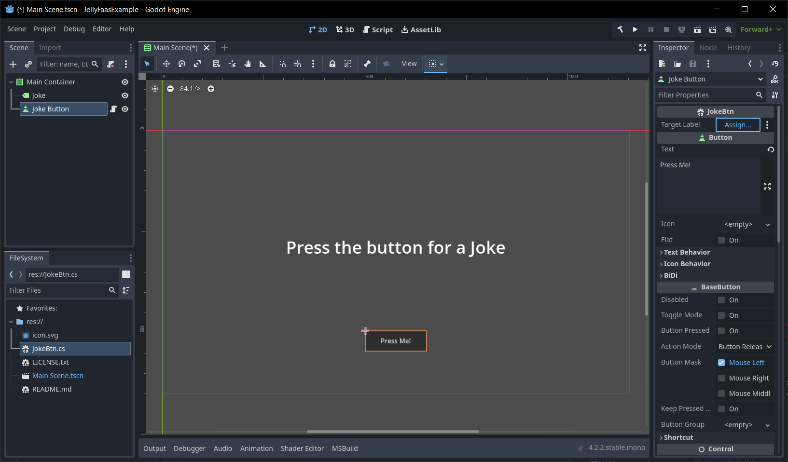
Finally we should select our Label node in the window which shows up, and press the Ok.
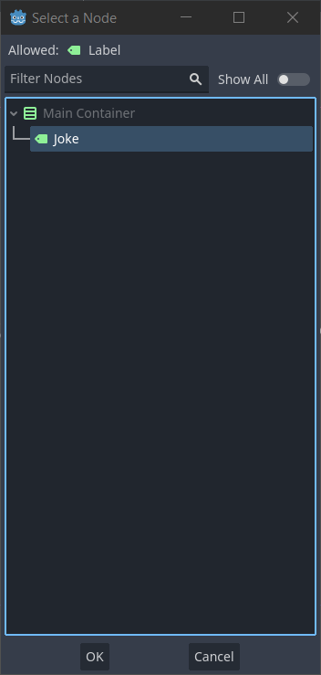
Now we can run the project! Press the run button in the editor to run and see the results of our work.
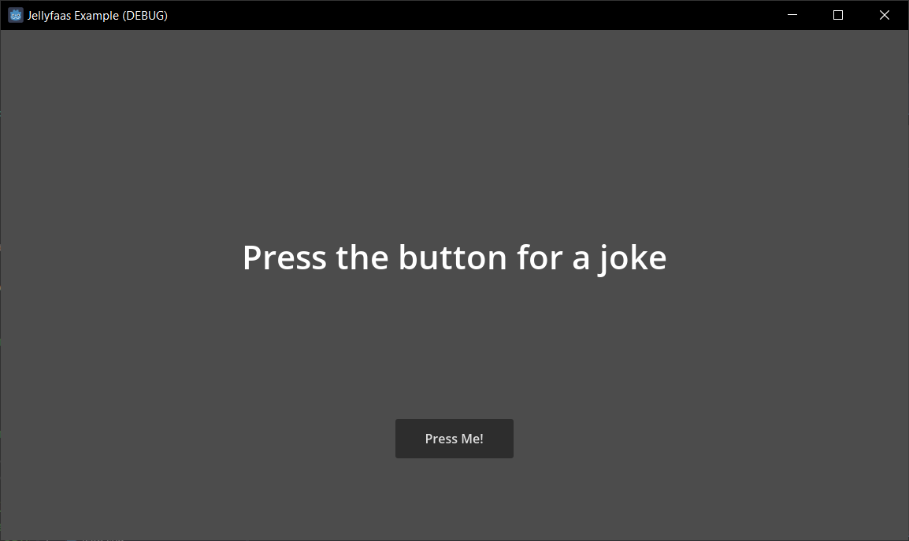
After pressing the button we can see that the function has been called, and has provided us with a randomly generated joke. Pressing the button multiple times should give us a new joke after every press.
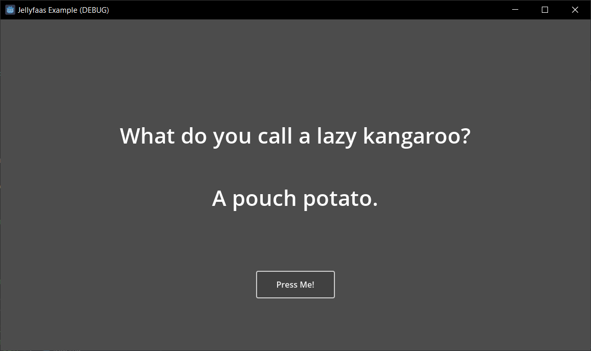
Related Links
- Install the .Net SDK
- Installing packages with the dotnet CLI tool
- Github repository with the example project from this guide
-
C# JellyFaas SDK Reference
The code we wrote
using TMPro;
using UnityEngine;
using Jellyfaas;
using System.Text.Json.Serialization;
public class JokeButton : MonoBehaviour
{
// Export this property so we can set the text label we want to put the joke in from the editor
public TMP_Text OutputLabel;
// Store the JellyFaas client so we don't have to remake it every time we call a function
private JellyClient client;
// Start is called before the first frame update
void Start()
{
client = new JellyClient(new JellyConfig("Insert your Api Key here")); // < -- Insert your Secret key here
}
public void OnClick() {
var joke_info = client.Lookup("joesjokes").Invoke<JoesJoke>(); // The joesjokes function does not take any parameters, and returns information on a randomly generated joke
OutputLabel.text = joke_info.joke + "\n\n" + joke_info.Punchline;
}
// The class which matches the definition of the Json object returned by the joesjokes function
// The joesjokes function returns a json object with two strings called "joke" and "punchline".
public class JoesJoke
{
// As long as the property name matches the Json property the SDK will read the data into the matching properties
public string joke { get; set; }
// Json property names are case sensitive, meaning that this property does not match
// Fortunately, the JellyFaas SDK uses the System.Text.Json library when deserializing Json objects, meaning that you can use any attributes provided by it
// The following attribute tells the SDK to assume this property is called "punchline" when translating to and from Json.
[JsonPropertyName("punchline")]
public string Punchline { get; set; }
}
}